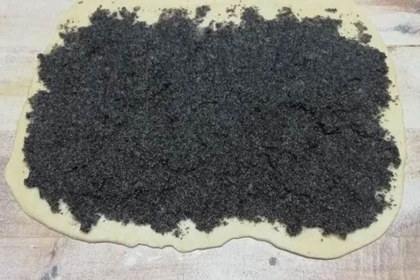
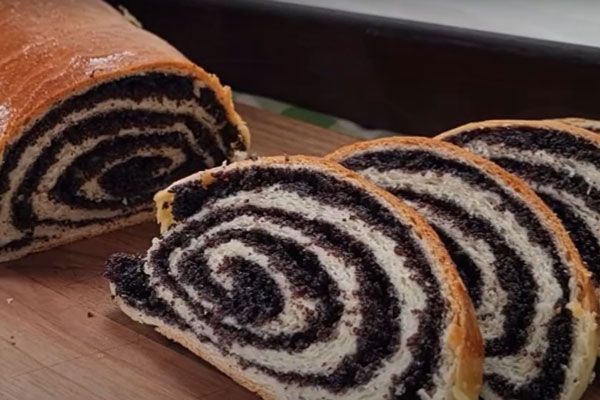
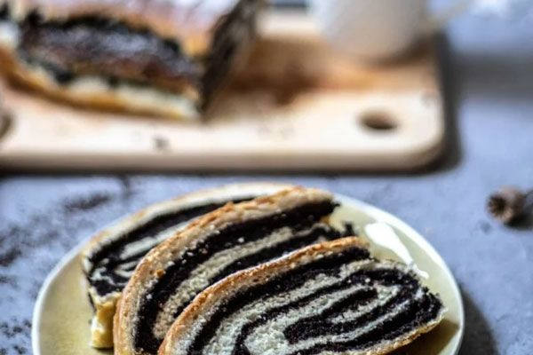
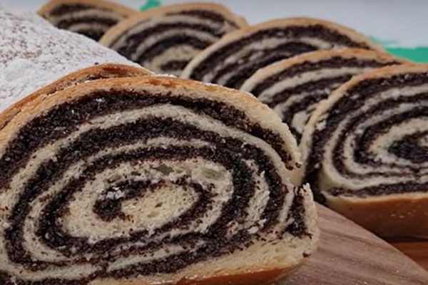
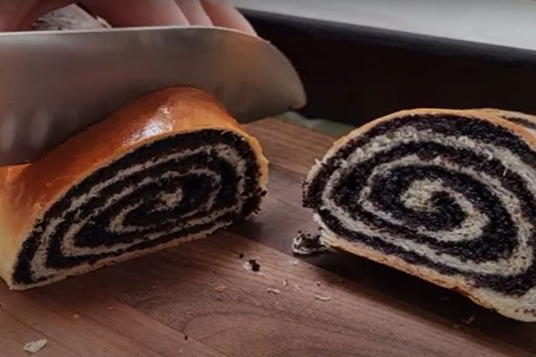

O našim štrudlama sa makom
Štrudle sa makom su pravljene po tradicionalnom receptu koji se prenosi sa generacije na generaciju. Svaka štrudla je ručno oblikovana i pečena sa puno ljubavi i pažnje. Koristimo samo kvalitetan mak koji sami meljemo, kako bismo osigurali savršen ukus i teksturu koja se topi u ustima.
Štrudle pravimo svakodnevno, tako da su uvek sveže kada stignu do vas. Možete ih naručiti u različitim veličinama i količinama, u zavisnosti od vaših potreba. Idealne su za desert, uz kafu ili kao slatki zalogaj u bilo koje doba dana.
Naše štrudle sa makom su poznate po svojoj sočnosti i bogatom ukusu, a tajna je u posebnom načinu pripreme testa i punjenja. Svaka štrudla je jedinstvena jer je ručno oblikovana, što im daje poseban šarm i autentičnost.






Vrste štrudli sa makom
Klasična štrudla sa makom
Tradicionalna štrudla sa bogatim punjenjem od maka.
Štrudla sa makom i višnjama
Štrudla sa kombinacijom maka i sočnih višanja.
Posna štrudla sa makom
Posna varijanta štrudle sa makom, bez jaja i mlečnih proizvoda.
Kako naručiti
Naše štrudle sa makom možete naručiti telefonom, putem kontakt forme na našem sajtu. Dostavljamo na teritoriji celog Beograda u roku od 24 sata od porudžbine.
Naruči odmah